StaticHollow
Something answered when you lit the altar.
Find a Forsaken Altar in the world. Wake it. Then try to survive what it lets in.
What Static Hollow is
Static Hollow is a creepypasta horror mod for Minecraft 26.3, made by Death, with its own CurseForge modpacks. It turns the whole game into something that is watching you, and then it tells a story in ten chapters that starts with nine creepypastas, strands you on an oil rig in a dead green sea, and brings the First Signal's creations out into your own world. Its end, The Last Broadcast, is still coming in part by part.
The world itself is wrong from the first minute: a grey, bruised sky, murky black-green water, a red sun and a full moon with a face. The fog is thick and cold, about 64 blocks of sight by day and about 18 at night. Every block, item and creature is redrawn at four times normal resolution, drained and darker. Every animal and monster in the game is rebuilt as a jointed 3D model with real wet eyes that dart, blink and, at night, stop and look back at you. The Enderman screams with its head lifted off a glowing maw of teeth. None of Minecraft's music plays any more, only the mod's own, and you have to keep warm and find clean water.
Then you find the altar.
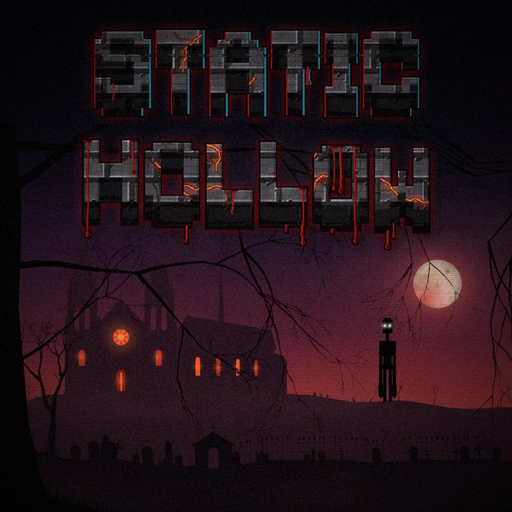
The ten chapters
The story is told in order. Each chapter starts when the one before it ends, and the Watcher points you to the next place.
-
The Nine
Starts when you wake the Forsaken Altar
Nine creepypastas hunt everyone in the world, mostly in the dark. Take one head from each to the church that isn't on any map, and raise the Hollow Saint.
-
The Breach
Starts when the Hollow Saint falls
A red wound opens where it died. Through it, the Void and the Breach Altar; back home, five killers and four cryptids, the Murder Mansion and the Mended.
-
The Glasshouse
Starts with the Mended's rusted garden key
The Gardener kneels at the great flower under the dome. Three days after he dies, a green rift opens down to what the flower really is: the Great Bloom.
-
The Flesh
Starts ten seconds after the Great Bloom rises
What the flower was holding down punches up out of the ground. Rosemont, the Laboratory, Shelter No. 4, the Rosemont Device, the Gardener reborn twice, and a gun above the sky.
-
The Static
Starts once the Bloom is dead
The Flesh dies back, but the parasites are still out there, and the static isn't noise. Relay 6, the Starlite Drive-In and the Null Static Zone; then the outbreak, the Hive and its Chorus, and the Deep under everything.
-
The Door at the End of the World
Starts when you carry the Last Voice into the End
The Watcher sealed the End for a reason. A Door full of static, the Stalls and their silent Audience, his Vault behind the picture, and on the other side, what he kept out.
-
The First Signal
Starts after the last show's credits
His hand comes up through the credits and takes you into the Hub, a realm he made, with a portal back to every chapter. Then something older than him breaks in.
-
The Dead Water
Starts as you fall from the Hub
He tears a portal open under you, onto an oil rig in a sea that goes on forever. The Remote breaks in your hand. Twelve waters, a submarine called Orpheus, and something that comes up out of the Black Below.
-
The Harbinger
Starts when Orpheus has all three of her modules in her bay
The Undertow eats the Grove's Heart, goes through the Drowned Heart, and turns. Three days on its bones rise out of it on the Grove's strings, leave you a static heart for your Remote, and tear a way out of the Dead Water. "i'll meet you at the hub."
-
Stay Tuned
Starts the next time you're home after the Harbinger has gone
The First Signal tears his own way out of the Hub to his kingdom, and his creations pour out into your world. The Broadcast, his transmitters, burrows and sets, hiding in lockers and under beds, and Blackout, the strongest gear there is.
-
The Last Broadcast
Starts the first time you come through one of his tears into his kingdom after the Broadcast
"you came into MY house?" The Refusal, the Coronation and his arena, the Fall, the Tearing, the Second Rite and the Rebirth, and a last fight in the air on the dragon's wings. It goes on in a coming update: the fight at his war table is still held back.
What's new since 1.63
Since 1.63:
| Version | What came |
|---|---|
| 1.63.4–1.63.22 | The Dead Water, fuller. Every water its own place, with its own crews; Orpheus's upgrade bay and her modules; Enzyme 1-2418 and the UV Dive Suit; the deep's pressure and the Ember Deep Suit; spore sickness and the Grove Heart; a fish of its own for each of the twelve waters, and new creatures in most of them. See the Dead Water. |
| 1.63.23–1.63.25 | Chapter nine: the Harbinger. The Turning, three days, and the Harbinger. The Remote (Mutated). See chapter nine. |
| 1.64 | Chapter ten: Stay Tuned. The Broadcast, his kingdom and his Faithful, his creations and servants, hiding, and Blackout. See chapter ten. |
| 1.65 | Tune-In Town. A secret night shift with twelve of them, and flashing lights, loud noises and jumpscares: read the warning first. See Tune-In Town. |
| 1.66 | More of the land. 23 new places of the Hollow's own in the Overworld, the caves, the Nether and the End, then lighter, and in one piece: the Hollow's own country. Blood on the ground, and /statichollow goto: see cold, thirst and the world. |
| 1.67 | Tonight on Channel Zero. A different night every night of chapter ten, and his creations, cleverer. |
| 1.68–1.72 | The Last Broadcast, parts one to four, and the End on its wings. Voices for Tune-In Town (1.71.2) and footsteps for its cast. See The Last Broadcast. |
| 1.72.3–1.72.5 | Warmth, needles and the cathedral. Torches and lanterns in your hand keep you warm, fires bring you back to comfortable but never past it, and shade keeps you cool (1.72.3). The Altar, Cathedral and Gardens needles the first time you join a world, and a recipe for the Cathedral Needle (1.72.4); see finding the story's places. No more bare redwoods round the cathedral with Biomes O' Plenty (1.72.5). |
| 1.73 | The Doomsday programmes. White Noise, the Rip and Closedown, three world events that really change the land; the Watcher's Field over every home; and the Doomsday weapons. See the Doomsday programmes. |
| 1.74–1.75.5 | Realm 3190, the second Easter egg. The Peddler and the 3190 Archive, six realms with their own killers and puzzle houses, the missing tapes, fear, the First Night and the Host, and the Hound. See Realm 3190 and its creatures. |
| 1.75.6–1.75.8 | The Starlight Annex. A second night shift under Tune-In Town, with an original cast, a closing night, arcade games and a prize counter, Gordon Pike's tapes, the Encore and the Supper Club. See the Starlight Annex and its cast. |
| 1.75.9–1.77 | After dark. The camcorder and the Dropout, Crane's Midnight Fair and the Phantom Express, the shortwave radio, static fishing and Gustave's kitchen, the collector's hall and the Curator, payphones, static storms, the Final Broadcast and the Eavesdropper, the Hollow Herald, the Night Bus, the ice cream truck and the seasons. See after dark. |
| 1.77.1–1.77.5 | Fixes and a clock. Faster world generation, the TaCZ and Iris error storm gone, the Peddler's rewards, tapes under shaders, the Hound through doors, no more flickering models, and a clock in the corner. Since 1.77.3 the Easter eggs wait until the story is done (/statichollow eggs early opens them sooner). |
At a glance
- Current version
- 1.77.5on CurseForge
- Minecraft
- 26.3
- Fabric
- Loader 0.19.5with Fabric API (0.166.2+26.3 in the modpack)
- Forge
- 66.0.9separate build, plays the same
- Java
- 25
- Memory
- 8 GBthe modpacks ask CurseForge for it
- Modpack
- Static Hollow - Dead ChannelFabric, on CurseForge
- Made by
- Death
On CurseForge: Static Hollow - Dead Channel (the modpack, the easiest way to play), Static Hollow (the mod), and the optional packs HD Models, HD World, Shader PBR and Visuals.
Find your way
From the archive
Screenshots from the mod's CurseForge page, in story order. The ones marked with a pack were taken with that optional pack on.
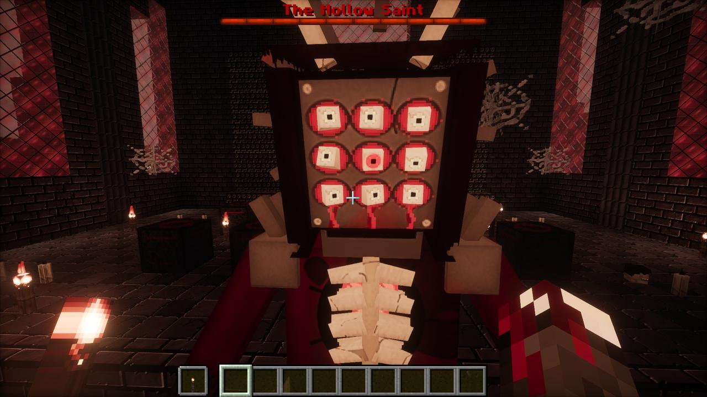
The Hollow SaintChapter one 
The AntlerkinChapter one 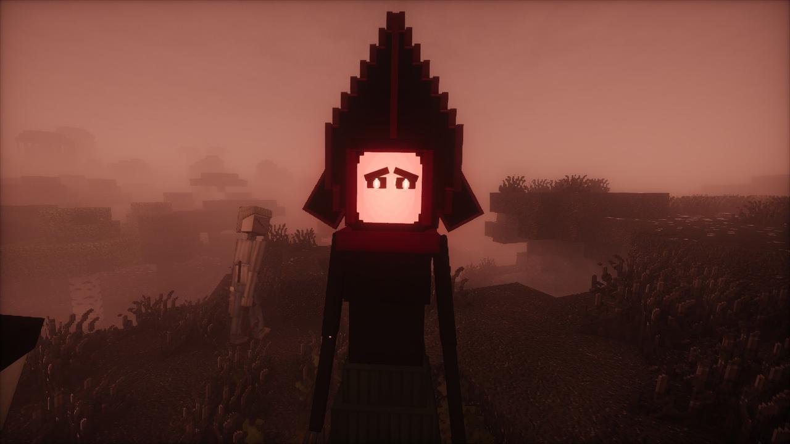
In the fogThe Flatwoods Monster 
A face in the villageThe Flatwoods Monster 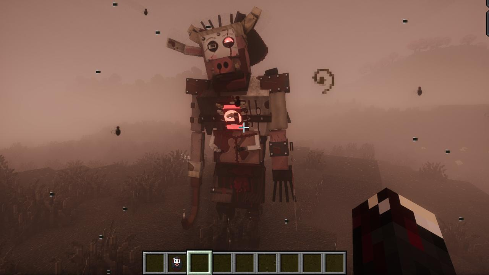
The MendedChapter two 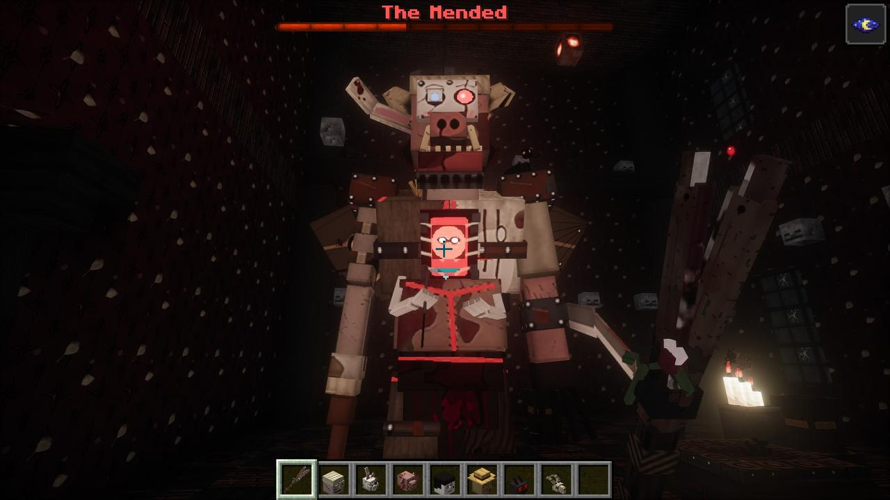
The Mended, up closeHD Models pack 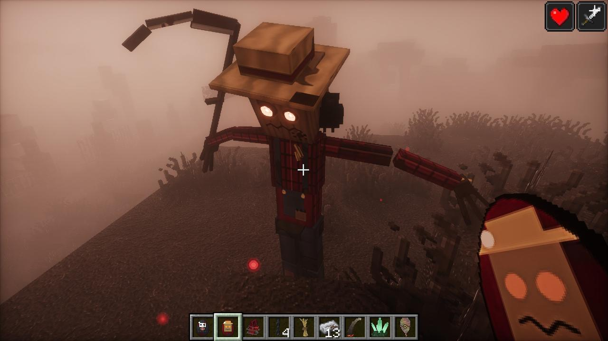
In the fieldsThe Harvestman 
Wings in the fogMothman 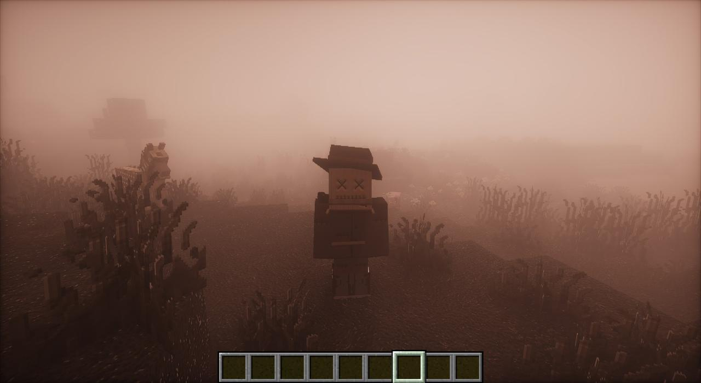
Out on the moor 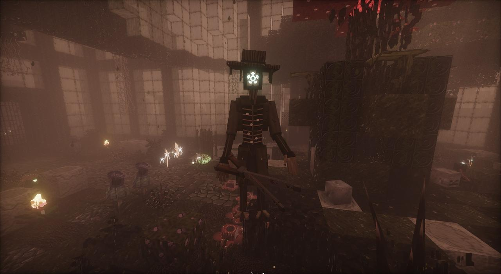
The glasshouseHD Models pack 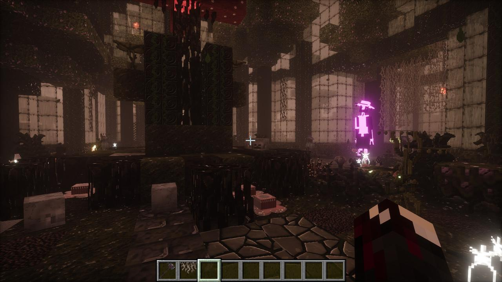
Botanic gardensHD World pack 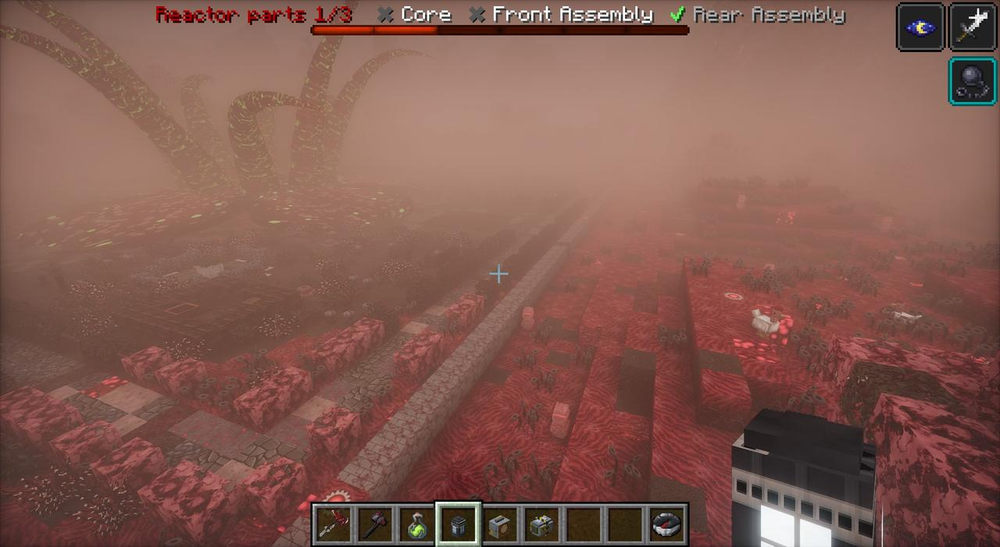
The Great BloomChapter four 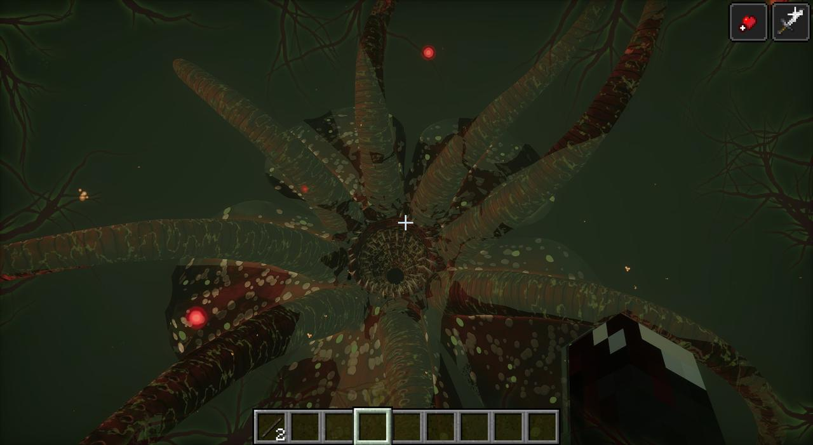
Swallowed aliveThe Great Bloom 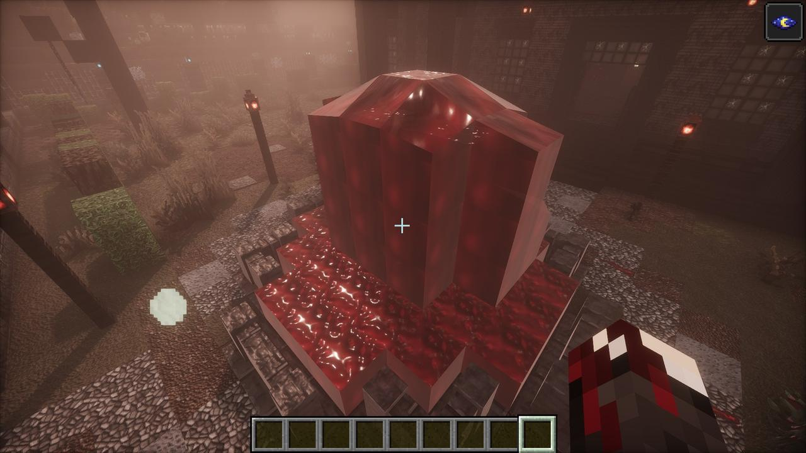
Flesh and stoneHD World pack 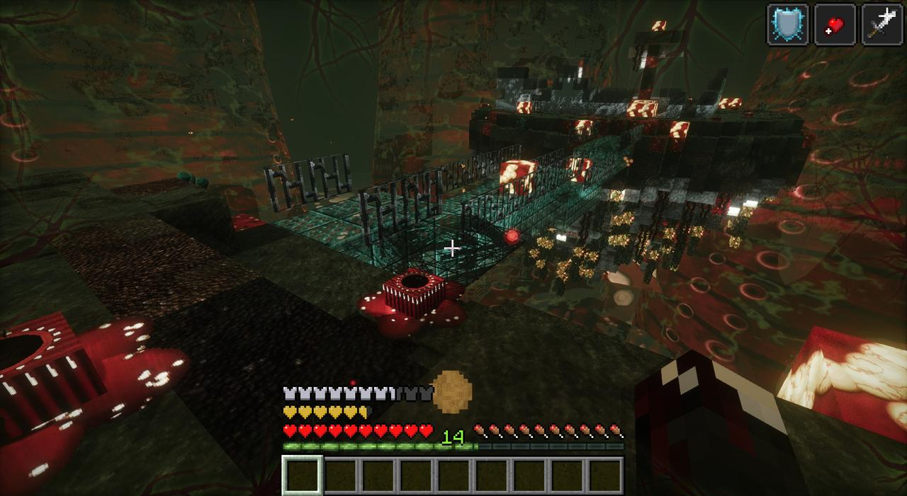
Under the fleshChapter four 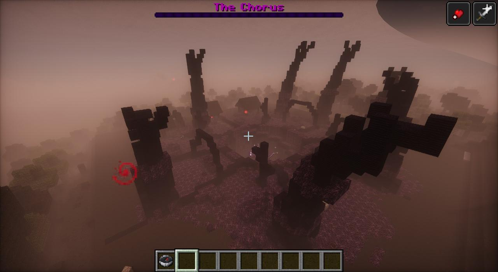
The ChorusChapter five 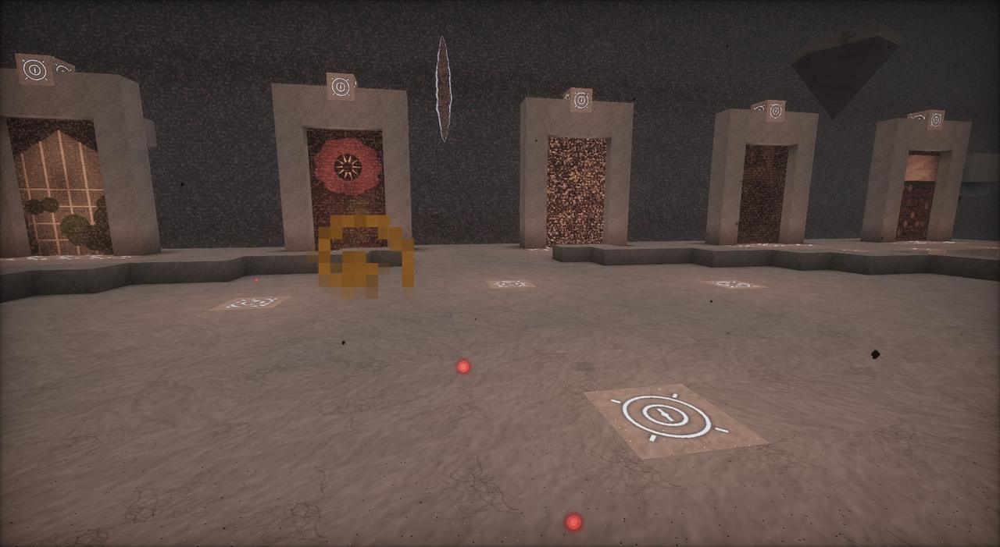
Replay portalsHD World pack 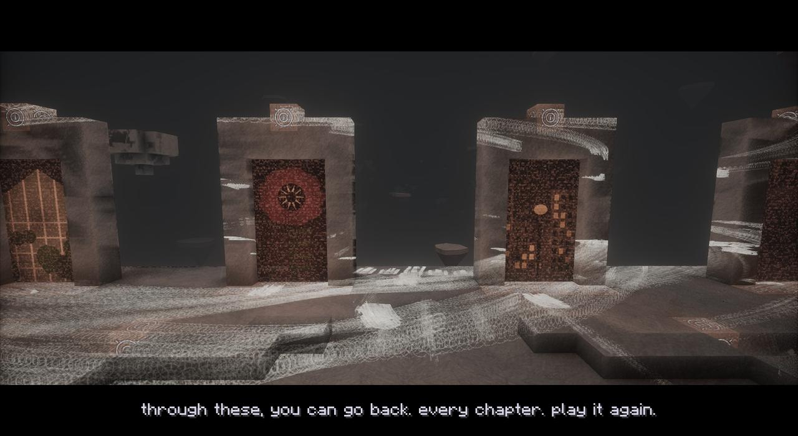
The HubChapter seven 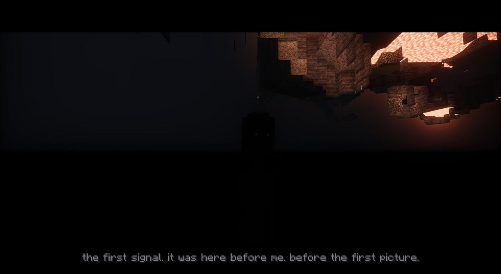
The First SignalChapter seven 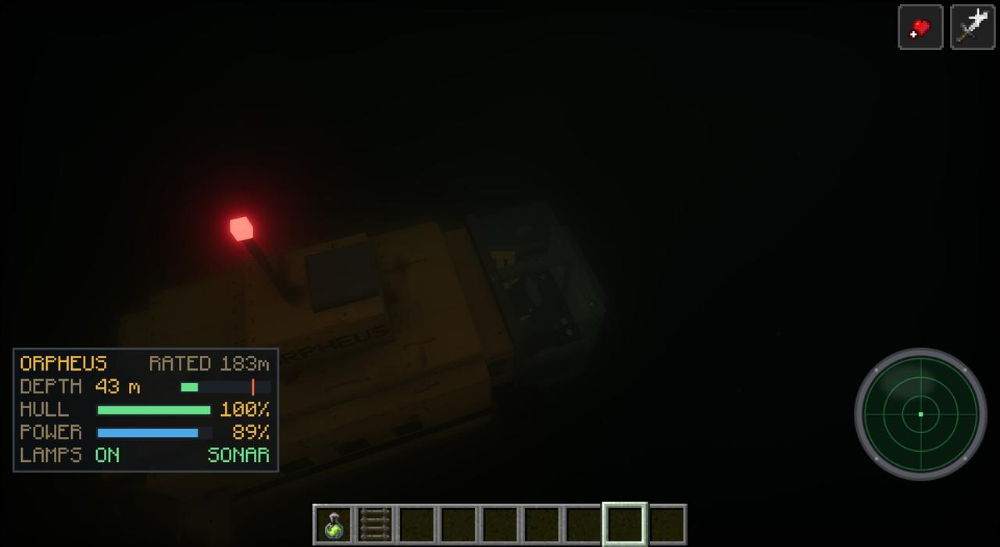
Orpheus, the submarineChapter eight 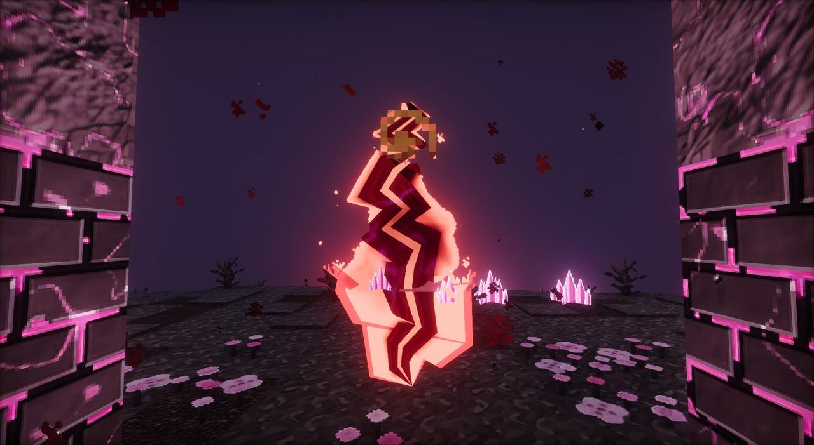
Glowing riftShader PBR pack
Before your first night
- Make a new world. The grey sky, murky water and dark clouds are part of the world's data, so a world made with an older version keeps its old sky.
- Follow the blue smoke. The Forsaken Altar is 500 to 1000 blocks from spawn on open, flat, dry ground, and a soul campfire burns at it.
- Don't look at the Broadcast. Staring at its screen burns you every second, and touching it shocks you.
- Get out of bed. If something knocks three times under the floor, use Leave Bed within about four seconds.
- Make a canteen. String, leather and an iron ingot. Fill it in the rain, or boil it before you drink.
- Listen to the Watcher. It never attacks. After your first, fifth and ninth kill it has something to say.
- Mind the secrets. They wait until the story is done. Tune-In Town and the Starlight Annex have flashing lights, flickering screens, loud noises and jumpscares, and once you say yes to Tune-In Town you're kept for five nights. Read the warning.
nine.
do you know what nine heads are for?
there is a church that isn't on any map. find it. i'll be on the ceiling.